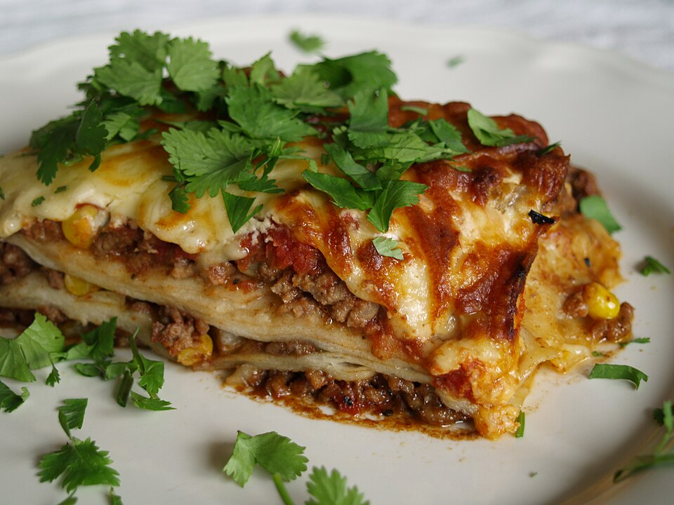

Classic Lasagne

Description
Succulent and delicious juicy lasagne. Layers of succulent pasta sandwiching a flavoursome bolognaise sauce and topped with a creamy bechemal sauce and molten cheese.
Ingredients
For the Bolognaise Sauce
- Olive oil
- 1 x Onion - finely chopped
- 3 Garlic Cloves - crushed - like my soul
- 500g minced beef
- 2tbsp Tomato puree
- 1 x 400g tine of chopped tomatoes
- 1 x beef stock cube
- Salt & pepper to season
- A glug of tomato ketchup
For the bechamel sauce
- 75g unsalted butter
- 75g plain flour
- 1 litre full-fat milk
- 1/4 tsp freshly grated nutmeg
The Rest of the Stuff
- 300g of fresh lasagne sheets
- 150g Parmesan cheese
- Extra Virgin Olive oil for drizzling
Method
- For the sauce, heat a heavy-based saucepan or casserole over a medium-high heat. Once hot, add a glug of oil and then add the onion and cook for 5–6 minutes, or until softened. Add the garlic and continue to cook for 2 minutes.
- Turn the heat up and add the mince to the pan and continue to fry, breaking up any large chunks, until the meat is brown all over. Season with salt and pepper. Once completely browned, add the tomato purée, mixing well. Cook for 5-6minutes, scraping any bits stuck to the bottom of the pan.
- Add the tomatoes to the pan, mix well and bring to a simmer. Pour in 400ml/14fl oz of the stock. Bring to a rapid simmer, reduce the heat to low and leave to cook gently for an hour, stirring every now and again until thickened and reduced, but still moist. If at any point the mixture looks too dry then add the remaining stock along with a little water, if needed, to top up.
- Taste and adjust the seasoning as necessary then set aside while you make the béchamel sauce.
- Preheat the oven to 190C/170C Fan/Gas 5.
- In a medium heavy-based saucepan, melt the butter. Stir in the flour and cook for 3–4 minutes, or until the mixture turns a light golden colour that resembles ground almonds. Gradually whisk in the milk in batches until smooth. Taste and season as necessary with salt and pepper. Add the nutmeg and then cook over a gentle heat for 4–5 minutes until thickened, stirring now and again.
- Spread one-third of the meat sauce across the bottom of a medium lasagne dish (approx 2–2.5 litres/3½–4½ pints in volume) and top with a quarter of the béchamel, then cover with lasagne sheets, breaking any as necessary to fit so that everything is covered. (It doesn't matter if the sheets overlap a little.) Sprinkle over a quarter of the Parmesan.
- Repeat the process to create a further two layers. Finish with a final layer of lasagne sheets and the remaining béchamel, making sure that all the lasagne sheets are completely covered. Sprinkle over the remaining Parmesan.
- Drizzle with a little extra virgin olive oil, put onto a baking tray and place in the preheated oven to bake for 30–40 minutes, or until golden-brown and bubbling.
- Serve in hearty wedges with a crisp green salad.
Home